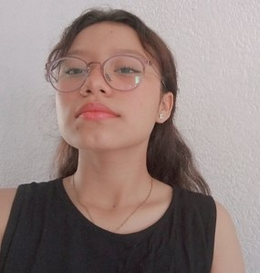

¡Hola, bienvenido, soy Paola Méndez!
Antes que nada te agradezco que estés aquí. En este sitio encontrarás información sobre mí, como mis gustos, planes a futuro, pasatiempos, entre muchas otras cosas.
Espero que te guste todo lo que tengo preparado para este pequeño blog que realicé con demasiado esmero.
Sobre la Paola pequeña
Mi nombre completo es Paola Guadalupe Méndez Cab y nací en la tarde del 12 de diciembre de 2003, el día de la Virgen de Guadalupe, de ahí mi segundo nombre. Tuve la suerte de nacer sana y con todo correcto, aunque no puedo negar que no hubo complicaciones con mi salud, pero no pasó a más y se quedó como un pequeño susto.
Mis papás describen a la Paola pequeña de tan solo unos cuantos años de edad como una niña curiosa y hecha una bolita de masa. Mi tía junto a mi mamá le gustaban fotografiarme cuando hacía una travesura, jugaba a las barbies o al sentirme una modelo profesional con mis vestiditos, siempre me gustó vestirme bonito.
A los dos años y medio acudí al kínder "Pasitos de Preescolar" lugar donde aprendí a desenvolverme con personas externas a mi familia. Luego de tres años pasé a la primaria, a la que me inscribieron se llamaba "Baja California" y puedo jurar que fue la mejor elección de mis papás, me llevé gratos recuerdos, obtuve diplomas, obtuve grandes amistades con niños de mi edad y con maestros. No tengo queja alguna de mi vida académica de ese entonces.
Hay mucho que contar sobre esa etapa de mi infancia, pero jamás terminaría de contar todo. Aunque puedo resumirlo en que tuve un crecimiento muy libre, sensilla y sobre todo feliz a lado de mis papás, mi tía y hermana.
La Paola de ese entonces fue muy feliz en esa etapa.
Sobre la Paola adolescente
Es muy sencillo describir a la Paola que conoció de todo un poco en la secundaria "Dr. Eduardo Urzaiz Rodríguez". Dar este paso (primaria-secundaria) fue algo que marcó completamente mi vida, puesto que había muchas cosas a las que no estaba acostumbrada, aunque eso no logró evitar que fuera alguien muy feliz.
Yo era alguien muy moldeable y que se dejaba llevar por la marea, es decir, me dejaba influenciar. Es hasta ahora que me di cuenta que eso estaba mal y que yo debía encontrar mi esencia en lugar de buscar como encajar con las personas que empezaba a conocer.
Así como tuve mis tropiezos, tuve mis aciertos. Uno de ellos son las magníficas personas que tuve como amigas, las cuales actualmente son mis mejores amigas. Otro acierto, fueron mis notas en los tres años de secundaria, mi promedio se mantenía sobre nueve y por ende recibía reconocimiento cada fin de año.
La Paola de ese entonces cometió errores, pero supo repararlos.
Sobre la Paola actual
Ahora me siento más yo misma, alguien con esencia y con un largo camino por recorrer para terminar de conocerse. Las inseguridades siguen presentes como siempre pero espero que en un futuro vayan reduciendo.
Ando un punto de mi vida donde no sé como me siento diario, pero puedo llegar a decir que ando en un punto medio, ni completamente feliz, ni completamente triste. La frase "estar bien" queda bien.
La Paola de ahora está buscando ser todo lo que se ha propuesto.